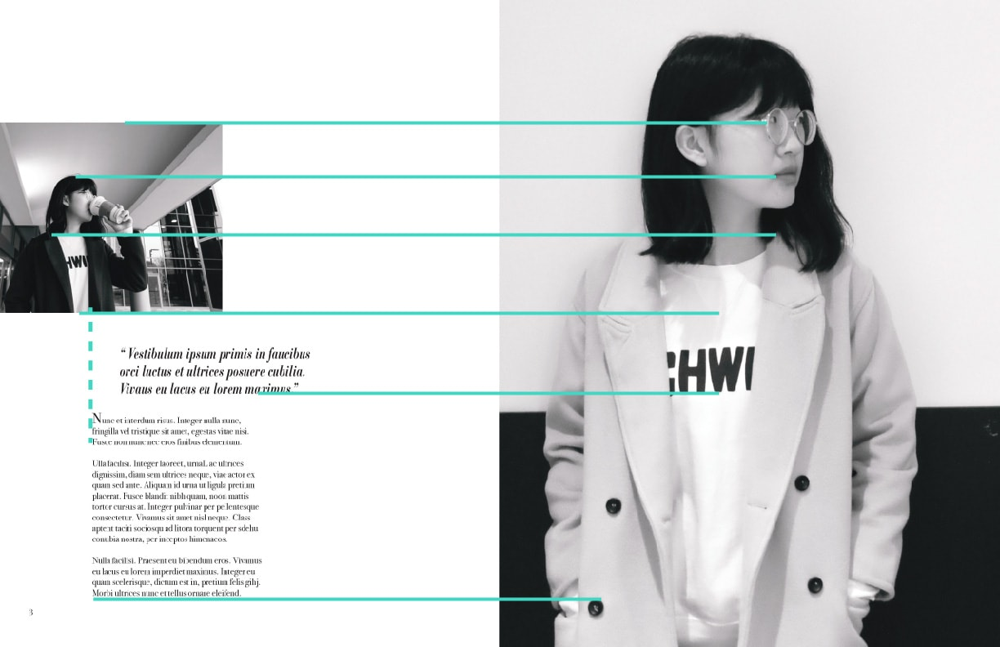

Magazine
This individual project for IAT 233 was to explore relationship between type, space and image. It focuses onthe Brodovitch method about how to do layout for graphic design. In other words, I need to consider more underlying structure that can drive invisible structure under the work in order to achieve unity.
As we can see, images play a significant role in this practice, so I need to do a lot of pre-work for images. First of all, I took some photos at Metrotown under the help of my friend. We wore coats in both a light and a dark color in order to make contrast colors with background walls. Secondly, thought about and selected images if they are a good image to start. Then, I found contrasts in images that I can create interest, and adjusted colors in Photoshop to grayscale. Finally, I cropped images and tried to layout with texts in different ways.


This project makes a deep impression on me. The professor opens my mind that white space is not ugly any more. Less is more, and white space can make beauty as well. By applying Brodovitch method, the layout looks more neat and dynamic.
Also, I got unforgettable lessons from this experience that every photo can be perfect after we edit and crop it. When we crop images in different ways, the image can deliver a different feelings to viewers.